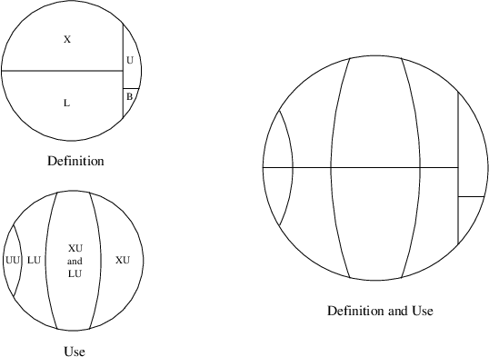
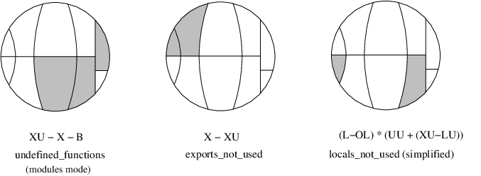

Xref - The Cross Reference Tool
View SourceXref is a cross reference tool that can be used for finding dependencies between functions, modules, applications and releases. It does so by analyzing the defined functions and the function calls.
In order to make Xref easy to use, there are predefined analyses that perform some common tasks. Typically, a module or a release can be checked for calls to undefined functions. For the somewhat more advanced user there is a small but flexible language that can be used for selecting parts of the analyzed system and for doing some simple graph analyses on selected calls.
The following sections show some features of Xref, beginning with a module check and a predefined analysis. Then follow examples that can be skipped on the first reading; not all of the concepts used are explained, and it is assumed that the reference manual has been at least skimmed.
Module Check
Assume we want to check the following module:
-module(my_module).
-export([t/1]).
t(A) ->
my_module:t2(A).
t2(_) ->
true.Cross reference data are read from BEAM files, so the first step when checking an edited module is to compile it:
1> c(my_module, debug_info).
./my_module.erl:10: Warning: function t2/1 is unused
{ok, my_module}The debug_info option ensures that the BEAM file contains debug information,
which makes it possible to find unused local functions.
The module can now be checked for calls to deprecated functions, calls to undefined functions, and for unused local functions:
2> xref:m(my_module)
[{deprecated,[]},
{undefined,[{{my_module,t,1},{my_module,t2,1}}]},
{unused,[{my_module,t2,1}]}]m/1 is also suitable for checking that the BEAM file of a module that is about
to be loaded into a running a system does not call any undefined functions. In
either case, the code path of the code server (see the module code) is used
for finding modules that export externally called functions not exported by the
checked module itself, so called library modules.
Predefined Analysis
In the last example the module to analyze was given as an argument to m/1, and
the code path was (implicitly) used as library path. In
this example an xref server will be used, which makes it
possible to analyze applications and releases, and also to select the library
path explicitly.
Each Xref server is referred to by a unique name. The name is given when creating the server:
1> xref:start(s).
{ok,<0.27.0>}Next the system to be analyzed is added to the Xref server. Here the system will
be OTP, so no library path will be needed. Otherwise, when analyzing a system
that uses OTP, the OTP modules are typically made library modules by setting the
library path to the default OTP code path (or to code_path, see the
reference manual). By default, the names of read BEAM
files and warnings are output when adding analyzed modules, but these messages
can be avoided by setting default values of some options:
2> xref:set_default(s, [{verbose,false}, {warnings,false}]).
ok
3> xref:add_release(s, code:lib_dir(), {name, otp}).
{ok,otp}add_release/3 assumes that all subdirectories of the library directory
returned by code:lib_dir() contain applications;
the effect is that of reading all BEAM files for the application.
It is now easy to check the release for calls to undefined functions:
4> xref:analyze(s, undefined_function_calls).
{ok, [...]}We can now continue with further analyses, or we can delete the Xref server:
5> xref:stop(s).The check for calls to undefined functions is an example of a predefined analysis, probably the most useful one. Other examples are the analyses that find unused local functions, or functions that call some given functions. See the analyze/2,3 functions for a complete list of predefined analyses.
Each predefined analysis is a shorthand for a query, a sentence of a tiny language providing cross reference data as values of predefined variables. The check for calls to undefined functions can thus be stated as a query:
4> xref:q(s, "(XC - UC) || (XU - X - B)").
{ok,[...]}The query asks for the restriction of external calls except the unresolved calls
to calls to functions that are externally used but neither exported nor built-in
functions (the || operator restricts the used functions while the | operator
restricts the calling functions). The - operator returns the difference of two
sets, and the + operator to be used below returns the union of two sets.
The relationships between the predefined variables XU, X, B and a few
others are worth elaborating upon. The reference manual mentions two ways of
expressing the set of all functions, one that focuses on how they are defined:
X + L + B + U, and one that focuses on how they are used: UU + LU + XU. The
reference also mentions some facts about the variables:
Fis equal toL + X(the defined functions are the local functions and the external functions);Uis a subset ofXU(the unknown functions are a subset of the externally used functions since the compiler ensures that locally used functions are defined);Bis a subset ofXU(calls to built-in functions are always external by definition, and unused built-in functions are ignored);LUis a subset ofF(the locally used functions are either local functions or exported functions, again ensured by the compiler);UUis equal toF - (XU + LU)(the unused functions are defined functions that are neither used externally nor locally);UUis a subset ofF(the unused functions are defined in analyzed modules).
Using these facts, the two small circles in the picture below can be combined.

It is often clarifying to mark the variables of a query in such a circle. This
is illustrated in the picture below for some of the predefined analyses. Note
that local functions used by local functions only are not marked in the
locals_not_used circle.

Expressions
The module check and the predefined analyses are useful, but limited. Sometimes more flexibility is needed, for instance one might not need to apply a graph analysis on all calls, but some subset will do equally well. That flexibility is provided with a simple language. Below are some expressions of the language with comments, focusing on elements of the language rather than providing useful examples. The analyzed system is assumed to be OTP, so in order to run the queries, first evaluate these calls:
xref:start(s).
xref:add_release(s, code:root_dir()).xref:q(s, "(Fun) xref : Mod").- All functions of thexrefmodule.xref:q(s, "xref : Mod * X").- All exported functions of thexrefmodule. The first operand of the intersection operator*is implicitly converted to the more special type of the second operand.xref:q(s, "(Mod) tools").- All modules of the Tools application.xref:q(s, '"xref_.*" : Mod').- All modules with a name beginning withxref_.xref:q(s, "# E | X ").- Number of calls from exported functions.xref:q(s, "XC || L ").- All external calls to local functions.xref:q(s, "XC * LC").- All calls that have both an external and a local version.xref:q(s, "(LLin) (LC * XC)").- The lines where the local calls of the last example are made.xref:q(s, "(XLin) (LC * XC)").- The lines where the external calls of the example before last are made.xref:q(s, "XC * (ME - strict ME)").- External calls within some module.xref:q(s, "E ||| kernel").- All calls within the Kernel application.xref:q(s, "closure E | kernel || kernel").- All direct and indirect calls within the Kernel application. Both the calling and the used functions of indirect calls are defined in modules of the kernel application, but it is possible that some functions outside the kernel application are used by indirect calls.xref:q(s, "{toolbar,debugger}:Mod of ME").- A chain of module calls fromtoolbartodebugger, if there is such a chain, otherwisefalse. The chain of calls is represented by a list of modules,toolbarbeing the first element anddebuggerthe last element.xref:q(s, "closure E | toolbar:Mod || debugger:Mod").- All (in)direct calls from functions intoolbarto functions indebugger.xref:q(s, "(Fun) xref -> xref_base").- All function calls fromxreftoxref_base.xref:q(s, "E * xref -> xref_base").- Same interpretation as last expression.xref:q(s, "E || xref_base | xref").- Same interpretation as last expression.xref:q(s, "E * [xref -> lists, xref_base -> digraph]").- All function calls fromxreftolists, and all function calls fromxref_basetodigraph.xref:q(s, "E | [xref, xref_base] || [lists, digraph]").- All function calls fromxrefandxref_basetolistsanddigraph.xref:q(s, "components EE").- All strongly connected components of the Inter Call Graph. Each component is a set of exported or unused local functions that call each other (in)directly.xref:q(s, "X * digraph * range (closure (E | digraph) | (L * digraph))").- All exported functions of thedigraphmodule used (in)directly by some function indigraph.xref:q(s, "L * yeccparser:Mod - range (closure (E |yeccparser:Mod) | (X * yeccparser:Mod))").- The interpretation is left as an exercise.
Graph Analysis
The list representation of graphs is used analyzing
direct calls, while the digraph representation is suited for analyzing
indirect calls. The restriction operators (|, || and |||) are the only
operators that accept both representations. This means that in order to analyze
indirect calls using restriction, the closure operator (which creates the
digraph representation of graphs) has to be explicitly applied.
As an example of analyzing indirect calls, the following Erlang function tries
to answer the question: if we want to know which modules are used indirectly by
some module(s), is it worth while using the
function graph rather than the module graph? Recall that
a module M1 is said to call a module M2 if there is some function in M1 that
calls some function in M2. It would be nice if we could use the much smaller
module graph, since it is available also in the light weight
modulesmode of Xref servers.
t(S) ->
{ok, _} = xref:q(S, "Eplus := closure E"),
{ok, Ms} = xref:q(S, "AM"),
Fun = fun(M, N) ->
Q = io_lib:format("# (Mod) (Eplus | ~p : Mod)", [M]),
{ok, N0} = xref:q(S, lists:flatten(Q)),
N + N0
end,
Sum = lists:foldl(Fun, 0, Ms),
ok = xref:forget(S, 'Eplus'),
{ok, Tot} = xref:q(S, "# (closure ME | AM)"),
100 * ((Tot - Sum) / Tot).Comments on the code:
- We want to find the reduction of the closure of the function graph to modules.
The direct expression for doing that would be
(Mod) (closure E | AM), but then we would have to represent all of the transitive closure of E in memory. Instead the number of indirectly used modules is found for each analyzed module, and the sum over all modules is calculated. - A user variable is employed for holding the
digraphrepresentation of the function graph for use in many queries. The reason is efficiency. As opposed to the=operator, the:=operator saves a value for subsequent analyses. Here might be the place to note that equal subexpressions within a query are evaluated only once;=cannot be used for speeding things up. Eplus | ~p : Mod. The|operator converts the second operand to the type of the first operand. In this case the module is converted to all functions of the module. It is necessary to assign a type to the module (: Mod), otherwise modules likekernelwould be converted to all functions of the application with the same name; the most general constant is used in cases of ambiguity.- Since we are only interested in a ratio, the unary operator
#that counts the elements of the operand is used. It cannot be applied to thedigraphrepresentation of graphs. - We could find the size of the closure of the module graph with a loop similar to one used for the function graph, but since the module graph is so much smaller, a more direct method is feasible.
When the Erlang function t/1 was applied to an Xref server loaded with the
current version of OTP, the returned value was close to 84 (percent). This means
that the number of indirectly used modules is approximately six times greater
when using the module graph. So the answer to the above stated question is that
it is definitely worth while using the function graph for this particular
analysis. Finally, note that in the presence of unresolved calls, the graphs may
be incomplete, which means that there may be indirectly used modules that do not
show up.